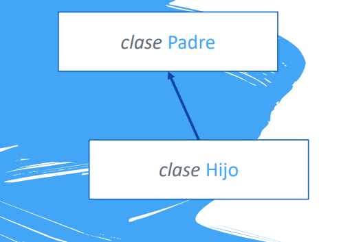
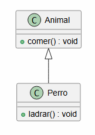
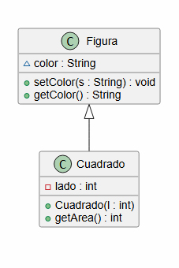

UD7 - Herencia, Polimorfismo e Interfaces
7.1. Herencia
La herencia permite crear una nueva clase que recoge todas las características de otra, añadiendo sus propias particularidades. Modela la relación ES-UN: un Perro ES UN Animal, un Coche ES UN Vehículo.

Ventajas principales:
- Reutilización de código — la clase hija hereda todos los atributos y métodos de la clase padre
- Extensibilidad — la clase hija puede añadir nuevos atributos y métodos, o redefinir los heredados
No existe herencia múltiple en Java
Una clase solo puede heredar de una única clase. La herencia múltiple se simula mediante interfaces (ver sección 7.5).
7.1.1 Sintaxis: extends
public class Animal {
public void comer() {
System.out.println("El animal está comiendo");
}
}
public class Perro extends Animal { // Perro hereda de Animal
public void ladrar() {
System.out.println("El perro está ladrando");
}
}

Perro miPerro = new Perro();
miPerro.comer(); // ✅ método heredado de Animal
miPerro.ladrar(); // ✅ método propio de Perro
La relación es unidireccional
La clase hija puede usar métodos del padre, pero no al revés.
7.1.2 La clase Object
Toda clase en Java hereda, en última instancia, de java.lang.Object. Si una clase no extiende ninguna otra, Java asume implícitamente extends Object.
Object
└── Figura
└── Cuadrado
public class Figura {
String color;
public void setColor(String s) { color = s; }
public String getColor() { return color; }
}
public class Cuadrado extends Figura {
private int lado;
public Cuadrado(int l) { this.lado = l; }
public int getArea() { return lado * lado; }
}

Cuadrado hereda color, setColor() y getColor() de Figura, y añade su propio atributo lado y método getArea().
Atributos private del padre
Los atributos declarados como private en la clase padre no son accesibles directamente desde la clase hija. Debes usar los getters/setters públicos o protegidos del padre.
7.1.3 Sobrescribir métodos: @Override
La clase hija puede redefinir un método heredado para cambiar su comportamiento:
public class Store {
public void welcome() {
System.out.println("Bienvenid@ a Store!");
}
}
public class LiquorStore extends Store {
@Override
public void welcome() {
System.out.println("Si eres menor de 18, vuelve a casa!");
}
}
@Override es una anotación que indica al compilador que estamos redefiniendo un método del padre. No es obligatoria, pero es buena práctica: si el método no existe en el padre, el compilador avisa del error.
7.1.4 La palabra clave super
super hace referencia a la clase padre. Se usa para:
Llamar a un método del padre desde la clase hija:
public class LiquorStore extends Store {
@Override
public void welcome() {
super.welcome(); // ejecuta el welcome() del padre primero
System.out.println("Si eres menor de 18, vuelve a casa!");
}
}
Llamar al constructor del padre desde el constructor de la hija:
public class Coche extends Vehiculo {
private int numPuertas;
public Coche(int pasajeros, int combustible, int km, int numPuertas) {
super(pasajeros, combustible, km); // llama al constructor de Vehiculo
this.numPuertas = numPuertas;
}
}
Constructores y herencia
Si el constructor de la clase hija no llama explícitamente a super(...), Java intenta llamar automáticamente al constructor sin parámetros del padre. Si ese constructor no existe, se produce un error de compilación.
class Animal {
public Animal(String nombre) { ... } // solo hay constructor con parámetros
}
class Perro extends Animal {
public Perro(String nombre) {
// ❌ ERROR: Animal no tiene constructor sin parámetros
// ✅ Solución: añadir super(nombre); como primera línea
}
}
7.1.5 Sobrescribir métodos de Object
Como todas las clases heredan de Object, se pueden sobrescribir sus métodos. Los más habituales son toString() y equals():
public class Persona {
private String nombre;
private int edad;
public Persona(String nombre, int edad) {
this.nombre = nombre;
this.edad = edad;
}
@Override
public String toString() {
return nombre + " (" + edad + " años)";
}
@Override
public boolean equals(Object obj) {
Persona p = (Persona) obj;
return this.nombre.equals(p.nombre) && this.edad == p.edad;
}
}
Persona p1 = new Persona("Paco", 44);
Persona p2 = new Persona("Rafa", 46);
System.out.println(p1); // Paco (44 años)
System.out.println(p1.equals(p2)); // false
7.2. Encapsulación
La encapsulación consiste en ocultar los detalles internos de una clase y exponer solo lo necesario. Se consigue declarando los atributos como private y controlando su acceso mediante getters y setters públicos.
// Sin encapsulación (peligroso)
persona.edad = -5; // nadie lo impide
// Con encapsulación (seguro)
public void setEdad(int edad) {
if (edad > 0 && edad < 150) {
this.edad = edad;
}
}
La encapsulación permite validar los datos antes de asignarlos, evitando estados inconsistentes en los objetos.
7.3. Clases abstractas
Una clase abstracta es una clase que no puede instanciarse directamente porque está pensada para ser genérica. Define una estructura común, pero deja algunos métodos sin implementar para que las subclases los completen.
abstract public class Figura {
protected Punto posicion;
public Figura(Punto posicion) {
this.posicion = posicion;
}
public Punto getFigura() {
return posicion;
}
abstract public void dibujar(); // método abstracto: sin implementación
}
- Una clase con al menos un método abstracto debe declararse como
abstract - Las subclases deben implementar todos los métodos abstractos (o declararse también
abstract) new Figura()→ ❌ ERROR: las clases abstractas no se pueden instanciar
public class Circulo extends Figura {
private double radio;
public Circulo(Punto posicion, double radio) {
super(posicion);
this.radio = radio;
}
@Override
public void dibujar() {
System.out.println("Dibujando círculo en " + posicion);
}
}
7.4. Polimorfismo
El polimorfismo permite que una variable de un tipo padre pueda almacenar objetos de cualquier subclase:
Vehiculo miCoche = new Coche(...); // un Coche ES UN Vehiculo
7.4.1 Restricción de acceso
Cuando usas polimorfismo, solo puedes acceder a los métodos del tipo declarado (el padre), no a los específicos de la subclase:
Vehiculo miCoche = new Coche(...);
miCoche.vehiculoDatos(); // ✅ método de Vehiculo
miCoche.getNumPuertas(); // ❌ ERROR: getNumPuertas() es de Coche
7.4.2 instanceof y typecast
Para acceder a los métodos propios de la subclase, primero comprueba el tipo con instanceof y luego haz un cast:
Vehiculo[] vehiculos = new Vehiculo[10];
// ... rellenamos el array con distintos tipos de vehículos
for (int i = 0; i < vehiculos.length; i++) {
if (vehiculos[i] instanceof Coche) {
Coche c = (Coche) vehiculos[i]; // cast a Coche
System.out.println(c.getNumPuertas());
} else if (vehiculos[i] instanceof Van) {
// ...
}
}
¿Para qué sirve el polimorfismo?
Permite trabajar con colecciones heterogéneas de objetos relacionados (como el array de vehículos del ejemplo) usando una sola variable del tipo padre, sin saber de antemano de qué subclase concreta es cada objeto.
7.5. Interfaces
Una interfaz es un contrato que especifica qué métodos debe implementar una clase, sin proporcionar código. Se usa con la palabra clave implements.
public interface Figura {
public float calcularArea();
public void dibujar();
}
public class Circulo implements Figura {
// OBLIGATORIO implementar calcularArea() y dibujar()
@Override
public float calcularArea() { ... }
@Override
public void dibujar() { ... }
}
Diferencias con la herencia
- Herencia (
extends): una clase puede extender solo una clase padre - Interfaces (
implements): una clase puede implementar varias interfaces → simula la herencia múltiple
7.5.1 Interfaz Comparable
Java incluye la interfaz Comparable<T> para comparar objetos. Obliga a implementar el método compareTo():
| Valor devuelto | Significado |
|---|---|
| Negativo | El objeto actual va antes que el parámetro |
| Positivo | El objeto actual va después que el parámetro |
0 |
Son iguales |
class Persona implements Comparable<Persona> {
private String nombre;
private int edad;
public Persona(String nombre, int edad) {
this.nombre = nombre;
this.edad = edad;
}
@Override
public int compareTo(Persona p) {
if (this.edad > p.getEdad()) return -1; // this va antes
else if (p.getEdad() > this.edad) return 1; // p va antes
else return 0; // iguales
}
}
7.5.2 Interfaz Comparator
Comparator<T> permite definir un criterio de comparación externo a la clase, útil cuando necesitas varios criterios de ordenación distintos:
public class PersonaComparator implements Comparator<Persona> {
@Override
public int compare(Persona p1, Persona p2) {
return Integer.compare(p2.getEdad(), p1.getEdad()); // orden descendente por edad
}
}
| Interfaz | ¿Dónde se define? | Método | Uso típico |
|---|---|---|---|
Comparable |
Dentro de la propia clase | compareTo(T obj) |
Un único criterio natural de ordenación |
Comparator |
En una clase externa | compare(T o1, T o2) |
Múltiples criterios de ordenación |
Resumen de la unidad
| Concepto | Clave |
|---|---|
extends |
La clase hija hereda atributos y métodos del padre |
@Override |
Sobreescribe un método heredado |
super |
Accede a métodos/constructor del padre |
| Clase abstracta | No se puede instanciar; puede tener métodos sin implementar |
abstract |
Método sin cuerpo; las subclases deben implementarlo |
| Polimorfismo | Variable del padre puede contener objetos de subclases |
instanceof |
Comprueba el tipo concreto de un objeto |
| Typecast | Convierte un objeto al tipo concreto para acceder a sus métodos |
interface |
Contrato de métodos que una clase debe implementar |
implements |
Una clase implementa una interfaz |
Comparable |
Interfaz para definir el orden natural de una clase |
Comparator |
Interfaz para definir criterios de ordenación externos |